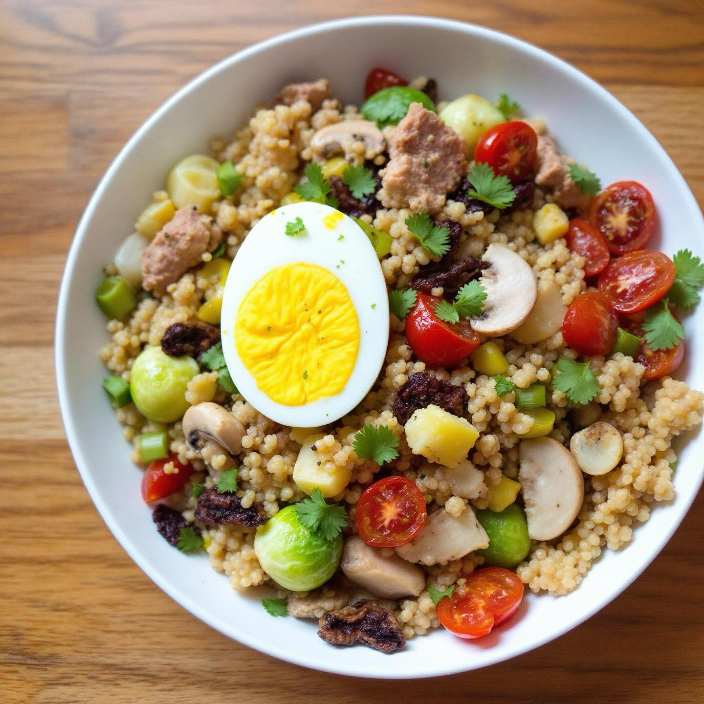

🥗 Insalata Estiva di Quinoa con Tonno e Uova Sode
Ingredienti:
- 200g di quinoa
- 2 uova sode
- 1 scatoletta di tonno (80g)
- 100g di pomodorini ciliegino
- 1 cetriolo
- Olio extravergine d'oliva q.b.
- Sale e pepe q.b.
- Succo di limone
👨🍳 Preparazione
- Cuoci la quinoa in abbondante acqua salata per circa 15 minuti, poi scolala e lasciala raffreddare.
- Prepara le uova sode: cuocile in acqua bollente per 9-10 minuti, poi raffreddale in acqua fredda.
- Lava e taglia i pomodorini a metà, il cetriolo a rondelle.
- Sbriciola il tonno e taglia le uova a spicchi.
- In una ciotola capiente, mescola la quinoa con le verdure, il tonno e le uova.
- Condiscila con olio EVO, succo di limone, sale e pepe.
- Servi fredda, ideale per le giornate estive.
💡 Consigli
Questa insalata è perfetta per un pranzo leggero e nutriente. Puoi prepararla in anticipo e conservarla in frigorifero per 2-3 giorni. Per una versione vegetariana, sostituisci il tonno con ceci o fagioli neri.
🥗 Summer Quinoa Salad with Tuna and Boiled Eggs
Ingredients:
- 200g quinoa
- 2 boiled eggs
- 1 can of tuna (80g)
- 100g cherry tomatoes
- 1 cucumber
- Extra virgin olive oil to taste
- Salt and pepper to taste
- Lemon juice
👨🍳 Preparation
- Cook the quinoa in plenty of salted water for about 15 minutes, then drain and let cool.
- Prepare the boiled eggs: cook them in boiling water for 9-10 minutes, then cool them in cold water.
- Wash and halve the cherry tomatoes, slice the cucumber into rounds.
- Crumble the tuna and cut the eggs into wedges.
- In a large bowl, mix the quinoa with vegetables, tuna and eggs.
- Season with EVO oil, lemon juice, salt and pepper.
- Serve cold, ideal for summer days.
💡 Tips
This salad is perfect for a light and nutritious lunch. You can prepare it in advance and store it in the refrigerator for 2-3 days. For a vegetarian version, replace the tuna with chickpeas or black beans.
🥗 Ensalada de Verano de Quinoa con Atún y Huevos Duros
Ingredientes:
- 200g de quinoa
- 2 huevos duros
- 1 lata de atún (80g)
- 100g de tomates cherry
- 1 pepino
- Aceite de oliva virgen extra al gusto
- Sal y pimienta al gusto
- Zumo de limon
👨🍳 Preparacion
- Cocina la quinoa en abundante agua salada durante unos 15 minutos, luego escurrirla y dejarla enfriar.
- Prepara los huevos duros: cocinelos en agua hirviendo durante 9-10 minutos, luego enfrialos en agua fria.
- Lava y corta los tomates cherry por la mitad, el pepino en rodajas.
- Desmenuza el atun y corta los huevos en gajos.
- En un bol grande, mezcla la quinoa con las verduras, el atun y los huevos.
- Aliña con aceite EVO, zumo de limon, sal y pimienta.
- Sirve fria, ideal para los dias de verano.
💡 Consejos
Esta ensalada es perfecta para un almuerzo ligero y nutritivo. Puedes prepararla con anticipacion y conservarla en el frigorifico durante 2-3 dias. Para una version vegetariana, sustituye el atun por garbanzos o frijoles negros.
🥗 Salada de Verão de Quinoa com Atum e Ovos Cozidos
Ingredientes:
- 200g de quinoa
- 2 ovos cozidos
- 1 lata de atum (80g)
- 100g de tomates cherry
- 1 pepino
- Azeite extra virgem a gosto
- Sal e pimenta a gosto
- Sumo de limão
👨🍳 Preparacao
- Cozinhe a quinoa em abundante agua salgada durante cerca de 15 minutos, depois escorra e deixe arrefecer.
- Prepare os ovos cozidos: cozinhe-os em agua a ferver durante 9-10 minutos, depois arrefeca-os em agua fria.
- Lave e corte os tomates cherry ao meio, o pepino em rodadas.
- Esmague o atum e corte os ovos em gomos.
- Numa tigela grande, misture a quinoa com os legumes, o atum e os ovos.
- Tempere com azeite EVO, sumo de limão, sal e pimenta.
- Sirva fria, ideal para os dias de verão.
💡 Dicas
Esta salada é perfeita para um almoço leve e nutritivo. Pode prepara-la antecipadamente e conserva-la no frigorifico durante 2-3 dias. Para uma versao vegetariana, substitua o atum por grao-de-bico ou feijao preto.
🥗 Sommerlicher Quinoa-Salat mit Thunfisch und hartgekochten Eiern
Zutaten:
- 200g Quinoa
- 2 hartgekochte Eier
- 1 Dose Thunfisch (80g)
- 100g Kirschtomaten
- 1 Gurke
- Natives Olivenoel extra nach Geschmack
- Salz und Pfeffer nach Geschmack
- Zitronensaft
👨🍳 Zubereitung
- Kochen Sie die Quinoa in reichlich Salzwasser etwa 15 Minuten, dann abtropfen lassen und abkuehlen.
- Bereiten Sie die hartgekochten Eier zu: Kochen Sie sie in kochendem Wasser 9-10 Minuten, dann in kaltem Wasser abkuehlen.
- Waschen und halbieren Sie die Kirschtomaten, schneiden Sie die Gurke in Scheiben.
- Zerkleinern Sie den Thunfisch und schneiden Sie die Eier in Spalten.
- In einer grossen Schuessel die Quinoa mit Gemuese, Thunfisch und Eiern vermischen.
- Mit nativem Olivenoel, Zitronensaft, Salz und Pfeffer abschmecken.
- Kalt servieren, ideal für Sommertage.
💡 Tipps
Dieser Salat ist perfekt für ein leichtes und nahrhaftes Mittagessen. Sie koennen ihn im Voraus zubereiten und 2-3 Tage im Kuehlschrank aufbewahren. Für eine vegetarische Version ersetzen Sie den Thunfisch durch Kichererbsen oder schwarze Bohnen.
🥗 Καλοκαιρινή Σαλάτα Κινόα με Τόνο και Βρασμένα Αυγά
Συστατικά:
- 200g κινόα
- 2 βρασμένα αυγά
- 1 κονσέρβα τόνου (80g)
- 100g ντοματίνια
- 1 αγγούρι
- Έξτρα παρθένο ελαιόλαδο κατά βούληση
- Αλάτι και πιπέρι κατά βούληση
- Χυμός λεμονιού
👨🍳 Εκτέλεση
- Μαγειρέψτε την κινόα σε άφθονο αλατισμένο νερό για περίπου 15 λεπτά, μετά στραγγίστε την και αφήστε την να κρυώσει.
- Προετοιμάστε τα βρασμένα αυγά: βράστε τα σε νερό που κοχλάζει για 9-10 λεπτά, μετά κρυώστε τα σε κρύο νερό.
- Πλύντε και κόψτε τα ντοματίνια στη μέση, το αγγούρι σε ροδέλες.
- Θρυμματίστε τον τόνο και κόψτε τα αυγά σε φέτες.
- Σε ένα μεγάλο μπολ, αναμείξτε την κινόα με τα λαχανικά, τον τόνο και τα αυγά.
- Αλατοπιπερώστε με ελαιόλαδο, χυμό λεμονιού, αλάτι και πιπέρι.
- Σερβίρετε κρύα, ιδανική για καλοκαιρινές μέρες.
💡 Συμβουλές
Αυτή η σαλάτα είναι τέλεια για ένα ελαφρύ και θρεπτικό μεσημεριανό. Μπορείτε να την προετοιμάσετε από πριν και να την διατηρήσετε στο ψυγείο για 2-3 ημέρες. Για μια χορτοφαγική εκδοχή, αντικαταστήστε τον τόνο με ρεβίθια ή μαύρα φασόλια.